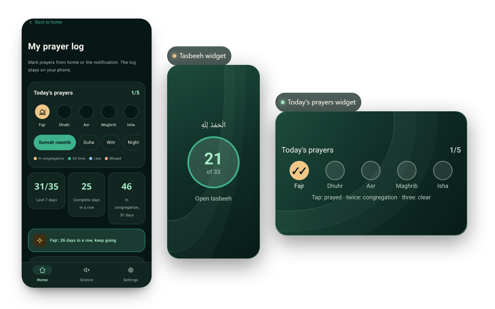
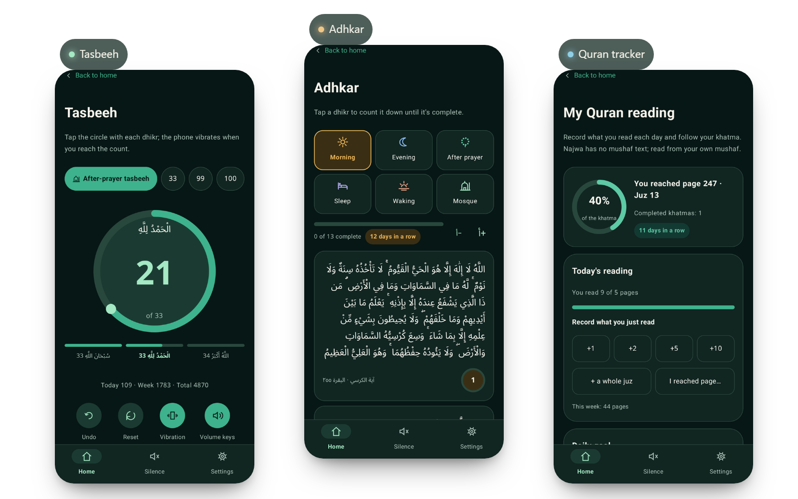
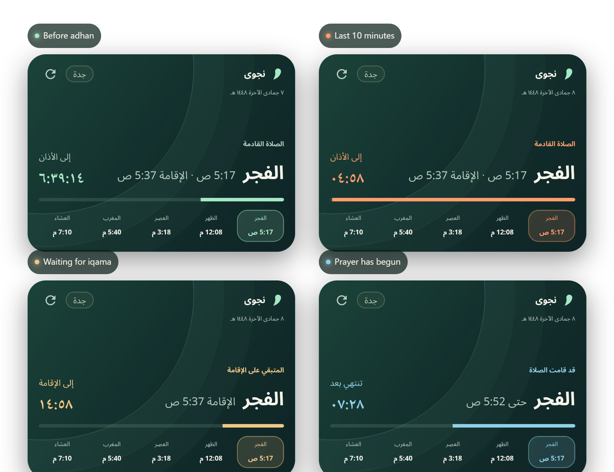

A smarter prayer log
In congregation, on time or late, the sunnah prayers, a five-week map and milestones. It never leaves your phone.
NAJWA 1.6.0 · A COMPANION FOR YOUR PRAYER DAY
Make room for the moment. Accurate times, thoughtful reminders, a widget that stays with you from adhan until the prayer begins, and quiet on your terms.
Direct APK download · Android 8.0+ · Free & open source

NEW IN 1.6.0
A prayer log worth keeping, a widget that logs with one tap, a tasbeeh and adhkar full of life, and settings that finally make sense.
In congregation, on time or late, the sunnah prayers, a five-week map and milestones. It never leaves your phone.
Tap once for prayed, twice for congregation — plus an optional “Have you prayed?” check-in before the time ends.
The after-prayer 33·33·34 sequence, volume-key counting, and sleep, waking and mosque adhkar.
Follow your khatma day by day, a dua of the day on home, and settings in six clear sections.
THE NAJWA EXPERIENCE
A clear interface. A place on your home screen. A reminder at the right time.
Choose light or dark. Follow the next prayer and iqama in an interface that gives every detail room to breathe.


Log from the widget or the notification: one tap for prayed, two for congregation. A five-week map, each prayer's rate, the sunnah prayers and milestones that keep you steady.

A tasbeeh ring that fills with the after-prayer sequence, adhkar in six categories that fold away as you finish, and a Quran tracker that follows your khatma.

Seven sizes, one design language: a clear countdown, a bar that fills as the prayer approaches, and today's five times with the next one highlighted.

The widget's colour and words change with each stage, then move on to the next adhan once your prayer window ends.

The prayer, adhan and iqama times, your city, a short message and a live countdown to iqama. Tap Stop adhan to silence the sound and keep the countdown.

A first run that asks only for what your choices need, then Advanced customization opens every detail: per prayer, durations, sound and appearance.

A SIMPLE BEGINNING
A few clear steps to make Najwa yours.
العربية · English · Bahasa Indonesia
اردو · বাংলা · हिन्दी · Türkçe
Download and install the APK. Allow installation from your download source if Android requests it.
Confirm your city or pick from 459,000+ places, then choose the calculation and Asr method.
Turn on adhan, iqama, Friday and auto-silence, and grant only the permissions they need.
Add a home screen widget and set iqama and silence durations for each prayer to match your mosque.
MAKE SPACE FOR QUIET
Version 1.6.0 · Build 117 · Signed APK, {{SIZE}} MiB
SHA-256 for this release:
{{SHA256}}Najwa is open source under Apache 2.0. Explore the code, modify it, and contribute improvements. No accounts, ads, or analytics.
Contribute on GitHub ↗Place data from GeoNames. Iqama follows your settings, not an official mosque timetable.